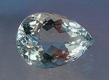

AQUAMARINE

ABOUT:
Beryl (/ˈbɛrəl/ BERR-əl) is a mineral composed of beryllium aluminium cyclosilicate with the chemical formula Be3Al2Si6O18.[5] Well-known varieties of beryl include emerald and aquamarine. Naturally occurring, hexagonal crystals of beryl can be up to several meters in size, but terminated crystals are relatively rare. Pure beryl is colorless, but it is frequently tinted by impurities; possible colors are green, blue, yellow, red (the rarest), and white. Beryl is also an ore source of beryllium.[